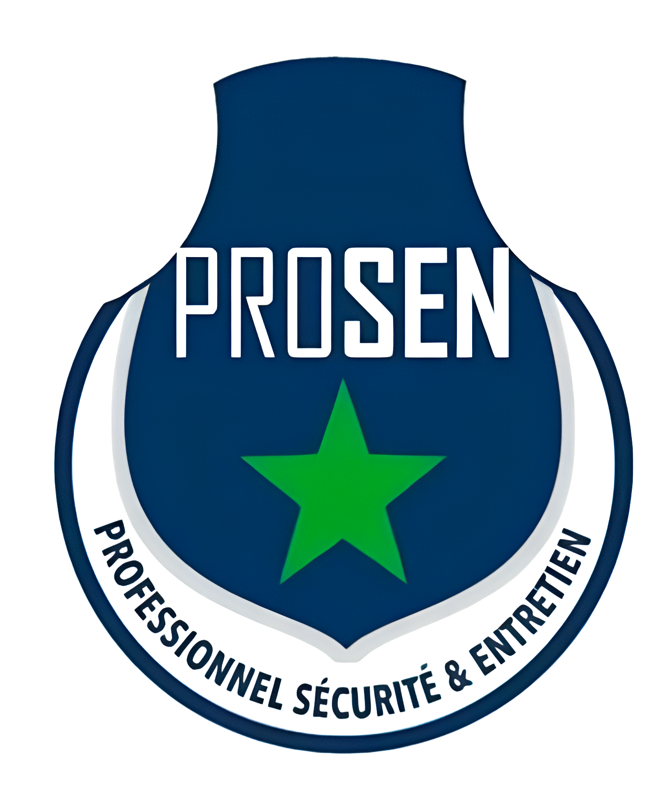

1. INTRODUCTION
Le logo PROSEN représente l'identité visuelle d'une entreprise de sécurité sénégalaise professionnelle. Il incarne les valeurs de protection, de professionnalisme et d'excellence dans le domaine de la sécurité.
2. ÉLÉMENTS CONSTITUTIFS DU LOGO
2.1 Composition
- Forme principale : Écusson de protection
- Élément central : Étoile verte
- Texte principal : "PROSEN" en lettres capitales
- Baseline : "PROFESSIONNEL SÉCURITÉ & ENTRETIEN"
- Couleurs : Bleu marine, vert, blanc, gris (ombre)
2.2 Symbolique
- L'écusson : Représente la protection et la sécurité
- L'étoile verte : Symbolise l'excellence et fait référence au drapeau sénégalais
- La forme arrondie : Évoque la confiance et l'accessibilité
3. SPÉCIFICATIONS TECHNIQUES
3.1 Palette de couleurs
Bleu PROSEN
#1a365d
RGB: 26, 54, 93
CMJN: 100, 80, 35, 25
Pantone: 2965 C
Vert PROSEN
#27AE60
RGB: 39, 174, 96
CMJN: 75, 0, 100, 0
Pantone: 7482 C
Gris PROSEN (ombre)
#C7CED3
RGB: 199, 206, 211
CMJN: 22, 14, 13, 0
Blanc
#FFFFFF
RGB: 255, 255, 255
CMJN: 0, 0, 0, 0
3.2 Typographie
"PROSEN" : Police personnalisée (basée sur une police sans-serif)
"PROFESSIONNEL SÉCURITÉ & ENTRETIEN" : Police sans-serif fine
Police secondaire (documents) : Arial
4. CONSTRUCTION DU LOGO
Maintenir un espace minimum autour du logo équivalent à la hauteur de la lettre "P" de PROSEN. Ne jamais placer d'autres éléments dans cette zone.
5. VERSIONS DU LOGO
5.1 Version principale
Note : Il n'existe pas de versions secondaires ni monochromes officielles du logo PROSEN.
6. UTILISATIONS CORRECTES ET INCORRECTES
6.1 Utilisations autorisées
- Documents officiels
- Supports de communication
- Uniformes et véhicules
- Signalétique
- Communications numériques
- Matériel promotionnel
✅ À faire
- Utiliser les couleurs officielles
- Respecter les proportions
- Maintenir la zone de protection
- Utiliser sur des fonds qui assurent un bon contraste
❌ À ne pas faire
- Déformer ou étirer le logo
- Modifier les couleurs
- Ajouter des effets (ombres, contours, etc.)
- Utiliser sur des fonds complexes qui nuisent à la lisibilité
7. APPLICATIONS
7.1 Papeterie
- En-têtes de lettre : Placer le logo en haut à gauche
- Cartes de visite : Centrer le logo
- Documents officiels : Respecter la charte graphique complète
7.2 Digital
- Site web : Utiliser en header
- Réseaux sociaux : Adapter aux formats requis
- Signatures email : Version simplifiée
8. FICHIERS DISPONIBLES ET FORMATS
Téléchargez les fichiers du logo PROSEN dans différents formats :
9. DIRECTIVES D'UTILISATION POUR LES PARTENAIRES
- Utilisez toujours les fichiers officiels fournis
- Respectez la taille minimale et la zone de protection
- Ne modifiez pas le logo de quelque manière que ce soit
- Obtenez l'approbation pour toute utilisation non standard
10. PROCESSUS D'APPROBATION
- Soumettez une demande d'utilisation à l'équipe de communication
- Fournissez un exemple ou une maquette de l'utilisation prévue
- Attendez l'approbation écrite avant toute production ou diffusion
- Conservez une copie de l'approbation pour référence future
11. HISTORIQUE DES VERSIONS DU LOGO
2024 - Version actuelle

Changement effectué : Modification de la police
Version originale - jusqu'à 2024

Version initiale du logo PROSEN
{kind=link}